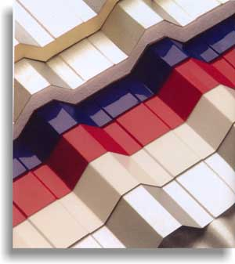
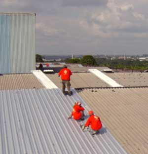
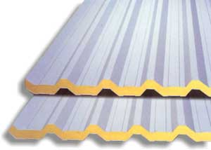
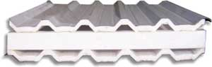

|
TELHAS TERMOACÚSTICAS As coberturas Termoacústicas da FERGEL reduzem a transmissão de calor do ambiente externo para o interno e proporcionam uma sensação térmica nesse interior até 40% menor. Essa condição favorece a instalação de sistemas climatizados em grandes galpões, reduzindo o consumo de energia elétrica. A Fergel também desenvolve projetos específicos do sistema termoacústico para redução ruídos externos.  Vários tipos de materiais podem ser utilizados na composição do sistema sanduiche. O aproveitamento da base existente A Fergel desenvolveu e já aplicou em diversos galpões industriais a aplicação do sistema termo-acústico sobre a cobertura existente. O sistema da Fergel permite a utilização da cobertura galvanizada ou galvalume como base da aplicação sanduíche do sistema térmico e da nova cobertura galvalume, que pode ser aplicada com telhas galvalume convencionais ou pré-pintada com sistema COIL-COATING.  Aplicação sobre camada existente. Esquema de redução da sensação térmica em galpão industrial com aplicação de cobertura termoacústica. (A) temperatura interno após a aplicação da telha termoacústica; (B) temperatura interna permanece a mesma ou aumenta sem a aplicação isolante.  Os sistemas termoacústicos podem utilizar diversos tipos de materiais isolantes: poliestireno, poliuretano, lã de rocha, e/ou lã de vidro. Redução de ruídos externos A Fergel desenvolve também sistemas avançados de cobertura para alta redução de ruídos externos. Ideal para auditórios, cinemas, teatros, anfiteatros, escolas, centros comerciais e outros.  Sistema de alta-redução de ruídos (47%) externos. Além das características impermeabilizantes, as coberturas termo-acústicas da Fergel são fabricadas com material retardante de chamas e não absorvem água. |